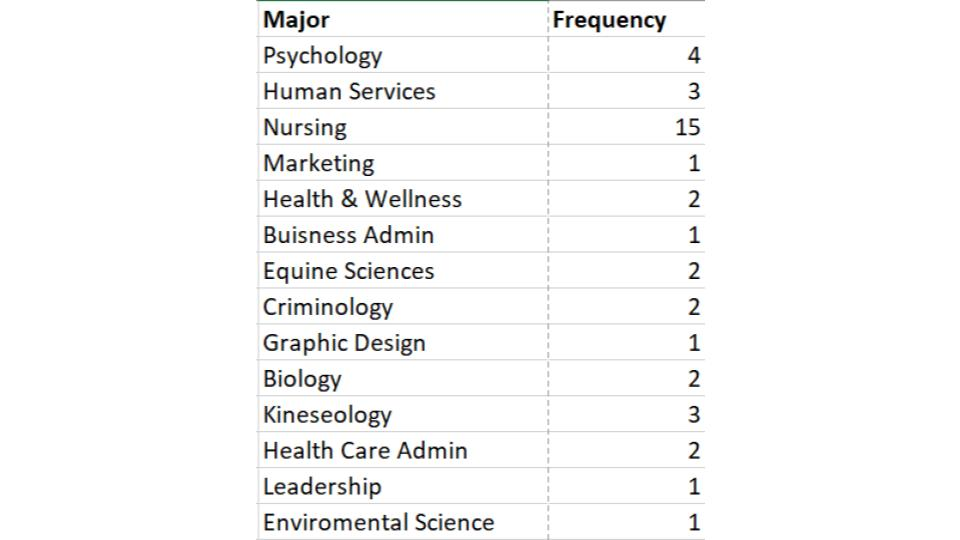

Example Frequency Table (Qualitative Data)
OBJECTIVE: GET A FIRST LOOK AT THE DATA
The Data: Majors in statistics class
Step 1:
Using the categories (majors) as our classes we first tally up how many students are in each class:
Step 2:
Then to make our table and replace the tally marks with the actual number!

To see this done watch the following video: